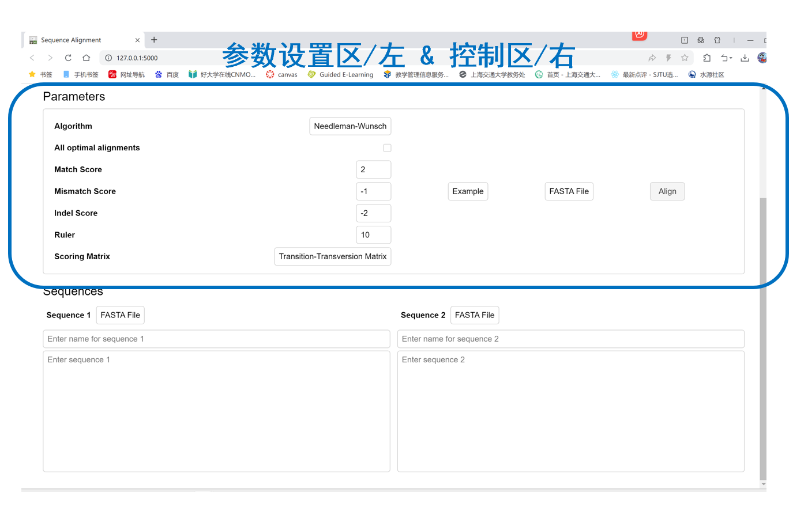
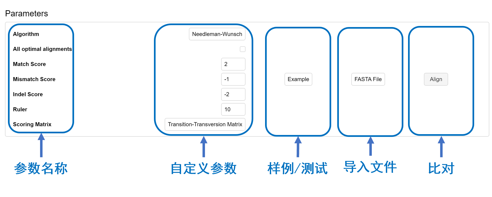
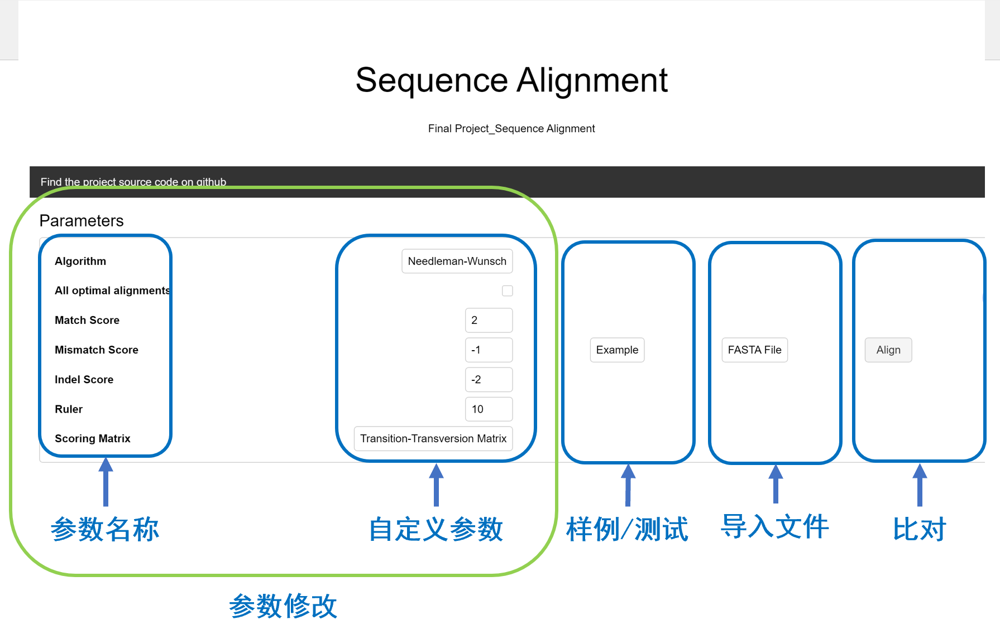
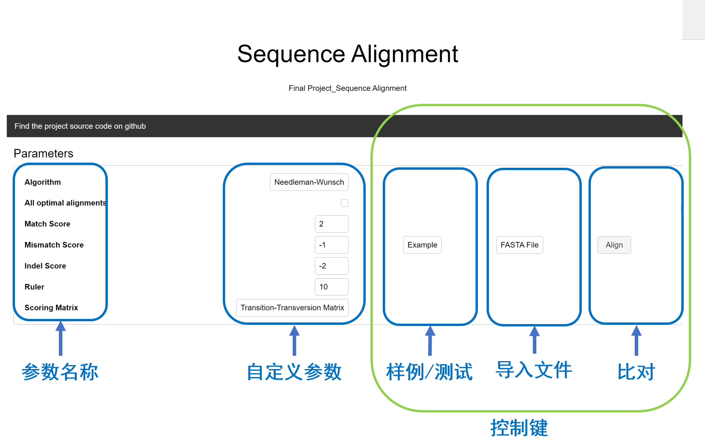
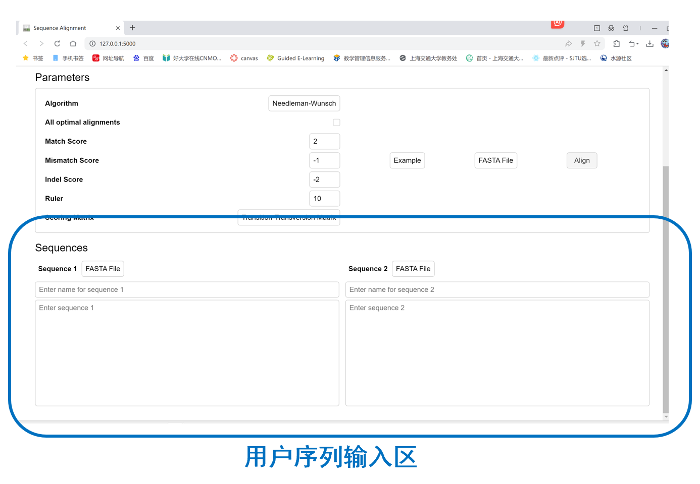
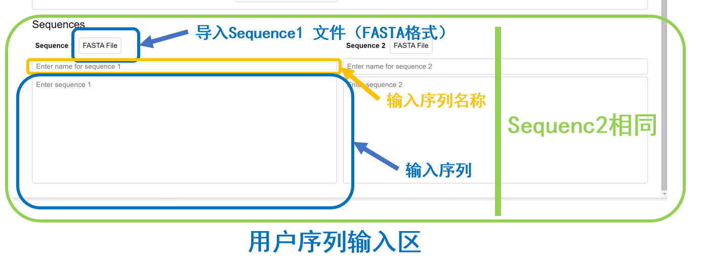
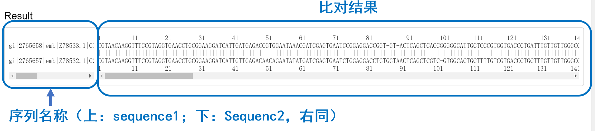

Sequence Alignment User Manual
前言概述
本手册旨在帮助用户快速了解本软件的操作流程和功能，执行序列比对过程。
快速开始:
程序目的
此项目旨在开发一个全面的Python包，实现Needleman-Wunsch序列比对算法。该包将提供一个用户友好的界面来执行序列比对，并支持评分系统的定制。该包将设计用于处理DNA/RNA序列和蛋白质序列，使其成为生物信息学、基因组学、蛋白质组学和进化生物学等领域的研究人员和科学家的多功能工具。此外，该包还将包括用于可视化和分析比对结果的工具。 本程序采用Needleman-Wunsch算法，通过动态规划的应用，为匹配、不匹配和间隙（插入/删除）分配分数，找到两个序列之间的最佳可能比对。算法计算一个评分矩阵，代表输入序列的所有可能子序列的最佳比对得分。
程序目标用户
本程序适用于生物学研究人员、遗传学家以及任何需要进行序列分析的科学家和学生。
程序应用场景
- 基因功能分析
- 物种进化研究
- 疾病相关变异鉴定
- 药物开发中的靶点发现
参数设置
面板
主面板介绍

参数解读
参数详解（下拉查看更多）
-
<>Algorithm:
- All optimal alignments:
是否显示所有最优比对结果。
了解更多：序列比对 - Match Score:
匹配得分，定义相同碱基或氨基酸匹配时的得分。
了解更多：评分方案 - Mismatch Score:
不匹配得分，定义不同碱基或氨基酸匹配时的得分。
了解更多：评分方案 - Indel Score:
插入或删除得分，定义序列中插入或删除碱基或氨基酸的罚分。
了解更多：间隙罚分 - Ruler:
是否在结果中显示尺度标记。
了解更多关于结果呈现的通用信息。 - Scoring Matrix:
选择用于评分的矩阵，如BLOSUM或PAM。
了解更多：替代矩阵, PAM, BLOSUM
选择比对使用的算法，如Smith-Waterman或Needleman-Wunsch。
了解更多：Smith-Waterman, Needleman-Wunsch
参数修改
面板
- Algorithm: 通过下拉菜单选择。
- All optimal alignments: 勾选框选择。
- Match Score: 输入框直接输入分数。
- Mismatch Score: 输入框直接输入分数。
- Indel Score: 输入框直接输入分数。
- Ruler: 勾选框选择。
- Scoring Matrix: 下拉菜单选择。
参数推荐
- 对于高度保守的序列，推荐使用较高的Match Score和较低的Mismatch与Indel Score。
- 对于一般的核酸序列，推荐优先使用PAM矩阵。
应用举例
Reference 1: Substitution Matrices https://onlinelibrary.wiley.com/doi/10.1002/9780470015902.a0005265.pub2 Reference 2: 打分矩阵 https://qinqianshan.com/bioinformatics/align/score-matrics/
参数控制键
面板 
- Example 键入样例序列待比对
- FASTA file 导入用户自定义fasta文件（自动识别两条序列）
- Align 进行比对
序列输入
面板
主面板介绍
您可通过输入框直接输入序列，或通过上传文件的方式加载序列。
结果解读
在确认进行比对，程序运行完成之后，页面将输出结果界面，显示序列比对的详细信息，包括比对得分、序列相似度百分比及具体的比对结果图
样例：
常见问题与解答
本模块长期维护，如果您发现无法解决的问题，欢迎联系我们
常见问题1：无法自定义评分矩阵参数
- 我们首先推荐您使用我们默认的打分矩阵 如您仍需要自定义参数，我们的面板支持您键入任何形式的数值，如果您遇到输入参数无法更改或显示不出来的情况，可能是因为您没有输入数值形式参数，如str类型无法被键入，请您检查所键入参数的类型，并检查浏览器设置，如您仍有困难，欢迎联系我们
对于长序列的比对，处理时间可能较长，请您耐心等待。为了优化性能和处理时间，我们推荐以下解决方案：
- 硬件加速: 使用支持并行处理的硬件，如多核处理器或GPU，可以显著提高序列比对的速度。
- 算法优化: 选择适当的算法和参数，如调整Scoring Matrix或减少搜索的序列范围，可以减少计算复杂度和时间。
- 分批处理: 将长序列分割成较小的片段进行比对，然后合并结果。
- 云计算服务: 考虑使用云计算资源进行序列比对，这可以提供更强的计算能力和更快的处理速度。
以上策略可帮助用户在处理大规模数据集时，有效管理资源和时间。如果您有更具体的需求或问题，欢迎通过我们的GitHub仓库提出。
源代码
我们的源代码可以在GitHub上找到，欢迎访问我们的 GitHub仓库 来查看代码、提交问题或者贡献代码。也可以通过标题栏的链接进入我们的仓库
此文章的最后一次编辑时间: 2024年06月05日 11：51